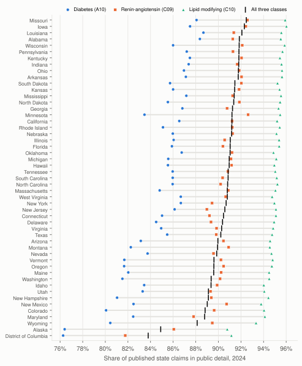
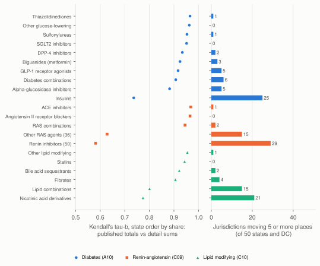

Summed public detail versus published totals in Medicare Part D prescriber data: a reconciliation study of cardiometabolic drugs, 2022 to 2024
This report has not been peer reviewed.
Abstract
Background. Studies often sum the public Medicare Part D Prescribers by Provider and Drug file to compare drugs and states. That file leaves out every prescriber-drug row with 10 or fewer claims. Earlier studies measured the overall shortfall, but not how it varies by drug label and state or whether it reorders states.
Methods. For 2024, published claim totals in the Geography and Drug file, which the Centers for Medicare & Medicaid Services builds from all claims, were compared with summed Provider and Drug rows for the same drug label and prescriber state. Scope was fixed in advance as all labels in Anatomical Therapeutic Chemical groups A10, C09 and C10. The primary measure was the retained fraction (detail sum over published total). Each cell was tested against the range the 10-claim rule implies, using published prescriber counts. Secondary measures were group shares of class claims and agreement of state orderings (Kendall's tau-b). Data years 2023 and 2022 were analyzed separately; a second implementation recomputed every cell.
Results. Public detail held 91.0% of 384,271,332 published in-scope claims and 84.2% of gross drug cost. The median label retained 35.5% (interquartile range 19.2% to 60.2%); labels with at least 1,000,000 claims together retained 93.5%, and labels with fewer than 10,000 together retained 21.5%. Across states and the District of Columbia, the claim-weighted fraction ranged from 83.8% to 92.5%. All 11,663 national and state cells were consistent with the 10-claim rule. Insulins retained 68.2%; their share of diabetes-drug claims was 18.6% from published totals and 14.7% from detail, and 25 of 51 jurisdictions moved five or more places in the state ordering (tau-b 0.74). Orderings for metformin, statins and the other large groups changed little. Results for 2023 and 2022 were similar (90.6% and 90.4% retained).
Conclusions. Summed public detail holds most cardiometabolic claims but misses large shares for low-volume labels, insulins and combination products, enough to reorder states by insulin share. Drug and state totals should come from the Geography and Drug file, with the retained fraction reported when detail is used. An open-source audit tool runs these checks on compatible release pairs.
Keywords: Medicare Part D; public use files; small-cell suppression; data quality; administrative data; prescribing; cardiometabolic drugs; reconciliation
Background
The Centers for Medicare & Medicaid Services (CMS) publishes three linked public files on Medicare Part D prescribing each year: a detail file with one row per prescriber, brand name and generic name, and two summary files, one by prescriber and one by geography and drug [1, 2, 3, 4]. The detail file is widely used in research because it ties claims to prescribers and their specialties. To protect beneficiaries, it leaves out any prescriber-drug combination with 10 or fewer claims and any prescriber with fewer than 11 claims in total. CMS states plainly that summing the detail file "will underestimate the true Part D totals" [1].
The summary files are built differently. CMS aggregates them from all Part D prescription drug event records rather than from the redacted detail [1]. The Geography and Drug file therefore gives, for each drug label, a national claim total and a state total, keyed by the state of the prescriber's address, which can serve as a reference for the detail file.
Published work has used the public prescriber files to compare drugs, specialties and places, with varying attention to what the detail file omits. Arizpe and colleagues compared antibiotic claims per enrollee across states from the 2013 prescriber public use file without describing how small rows were handled [5]. Sangha and colleagues described sodium-glucose cotransporter-2 (SGLT2) inhibitor prescribing relative to other glucose-lowering drugs and assigned a value of 5 to suppressed beneficiary counts [6]. Karpinski and colleagues built county statin measures only from rows with unredacted counts [7]. Toth and colleagues used the detail file for provider trends [8], and Gouin and colleagues used the By Provider file to identify higher-volume antibiotic prescribers [9].
A few studies have measured the shortfall. De Lott and colleagues reported that the 2013 detail file held 86.8% of all Part D claims and 78.1% of payments [10], and Ziakas and colleagues found that the 2015 detail file understated anticoagulant claims by 9.0% and costs by 16.6% [11]. Beshearse and colleagues found that outpatient antibiotic claims in the 2018 Provider and Drug file were about 69% of the Geography and Drug national total, but that the distributions of claims by census region and antibiotic class differed by less than 2% between the files [12]. Ma and colleagues reported that 7.6% of fills for substitutable cardiovascular drugs were missing from the clinician-level file and that the missing fills had a lower generic share [13]. Gronbeck and Feng found the same kind of gap in the Part B provider-level files, which held 94.3% of dermatology services overall and much less for some service categories [14]. Outside Medicare, small-count suppression has been shown to bias local mortality rates unevenly across places [15] and to distort trends in national prescription open data [16]. Imputation methods have been proposed for suppressed counts [17, 18], but they rely on modeling assumptions that a same-source published total does not need.
The literature reviewed did not report how the shortfall varies by drug label and state, whether each cell's gap is consistent with the 10-claim rule, or how much it changes therapeutic-group shares within states and state orderings. This study measured all three for a prespecified set of cardiometabolic medicines in 2024, replicated the analysis in 2023 and 2022, and packaged the checks as a reusable audit.
Methods
Design and data
This is a cross-sectional reconciliation of two CMS public files for the same data year. The primary year was 2024, the newest year with both files in the CMS catalog at the time of analysis (2026 release). Data years 2023 and 2022 were analyzed separately as replications. The inputs were Medicare Part D Prescribers by Provider and Drug [2], Medicare Part D Prescribers by Geography and Drug [3], and, for a supplementary check in 2024, Medicare Part D Prescribers by Provider [4]. Files were downloaded on 7 October 2026 from the distribution addresses listed in the CMS catalog, checked against the size and type reported by the server and against the documented column headers, and stored with Secure Hash Algorithm 256-bit (SHA-256) checksums (the source manifest in the downloads). The 2024 detail file had 28,023,892 rows covering 1,139,455 prescribers and 3,159 drug labels. The 2024 Geography and Drug file had 117,661 rows and 3,632 national drug labels.
An analysis plan was written and locked with a checksum and timestamp before any detail sum was compared with a published total (the analysis plan in the downloads). It is an internal protocol, not a registered one. Eleven dated amendments are recorded in it. Four were made before outcomes were computed: the bound check, the first public output rule, Kendall's tau-b, and the handling of a state row without a geography code. Seven were made after the primary results were seen: an exploratory post hoc analysis, three revisions of the public output rule that changed no result, the exclusion of one insulin pen device that had been mapped to insulins by mistake, a record of two implementation details that were in the code from the start but missing from the plan text (matching a component by its first word, and the top-10 overlap measure), and the exclusion of one 2023 electrolyte solution that had been mapped to diabetes drugs by mistake.
Drug scope
Scope was every published label mapped to Anatomical Therapeutic Chemical (ATC) group A10 (drugs used in diabetes), C09 (agents acting on the renin-angiotensin system) or C10 (lipid modifying agents). Ingredients came from the National Library of Medicine RxClass service (ATC source, RxNav data version 05-Oct-2026) [19]: 114 ingredients (54 in A10, 24 in C09, 36 in C10). A label was in scope when at least one component of its published generic name matched an in-scope ingredient. Components were split on "/" and stripped of salt and release-form words. A component matched an ingredient exactly, by its first word, or as an unambiguous prefix of at least five letters, because CMS truncates long generic names (for example "Dapaglifloz Propaned"). Any component beginning with the word insulin mapped to ATC A10A, which covers all insulins, except insulin delivery devices (pump cartridges and a reusable pen listed as administration supplies). The generic name "Fenofibric Acid (Choline)", written by its active moiety and published for two labels, was mapped to choline fenofibrate by a documented override, following the World Health Organization ATC note for C10AB11 [20]. In 2024, 259 labels were in scope (143 A10, 67 C09, 49 C10), of which 68 were non-insulin fixed-dose combination products; premixed insulins and insulin combinations with a glucagon-like peptide-1 (GLP-1) receptor agonist were grouped with insulins (ATC A10A). Combination products were kept as single labels and never split into ingredient totals. Each label's components, matched ingredients, matching method and group are listed in the scope decisions table in the downloads.
Matching the two files
Labels were joined on the exact published brand and generic names. Geography was joined on the state code that both files share: Federal Information Processing Standards (FIPS) codes for the states, the District of Columbia and the territories, plus codes for Armed Forces areas, "Unknown" and "Foreign Country". In both files this is the location of the prescriber in the National Plan and Provider Enumeration System (NPPES), not the beneficiary's residence. Key uniqueness was asserted in both files before any join, and each join was checked for cardinality. In every year each detail label matched a national reference label exactly (none unmatched), so no label needed normalization.
Measures
For each analysis cell (label, geography, year) with a published total A, the detail sum D was the sum of claims over detail rows with that label and geography. The national detail sum included every detail row of the label, whatever its state code. The retained fraction was R = D / A and the gap G = A minus D. When A was published and no detail row existed, R was 0. Cells with detail but no published total, and cells where D exceeded A, were to be kept and listed as exceptions, never set to zero or truncated. Claims, 30-day fills and gross drug cost were summed. Beneficiary counts were never summed, because one beneficiary can appear under several prescribers and drugs, and blank cells were never filled with zero, 5 or any other value.
The Geography and Drug file reports the number of prescribers behind each total, and the detail file has one row per prescriber per label. The number of prescribers whose rows are absent is therefore m = published prescribers minus detail rows. If the 10-claim rule is the only reason for the gap, each absent row holds 1 to 10 claims, so m ≤ G ≤ 10m. Every national and state cell was tested against this range. A gap inside the range is necessary but not sufficient for the rule to be the only cause: the upper limit can be exceeded only when the published total is more than ten times m, and the lower limit only when detail rows exist and at least one prescriber row is absent. The test uses only cell totals and does not infer any individual row.
Secondary measures were the share of class claims in each therapeutic group (ATC level 4 for single-ingredient labels, A10A for all insulins, and a combination group per class), computed once from published totals and once from detail sums with the same labels. For each group, the 50 states and the District of Columbia were ranked by share both ways, among jurisdictions with a published total. Agreement was summarized by Spearman's correlation, Kendall's tau-b, the largest rank change, the number of jurisdictions moving five or more places, and the overlap of the two top-10 lists. Gross drug cost retained fractions and prescriber coverage (detail rows divided by published prescribers) were also reported.
A state was treated as well matched when none of its in-scope cells had a negative gap or detail without a published total. Territories, Armed Forces areas, "Unknown" and "Foreign Country" were reported separately. In 2024 a supplementary all-drug reconciliation compared per-prescriber totals in the By Provider file with the sum of each prescriber's detail rows, which splits the national gap into claims in omitted rows of prescribers who appear in the detail file, claims of prescribers with no detail row, and claims outside the By Provider file.
One exploratory post hoc analysis compared each label's published claims per published prescriber with its retained fraction.
These files are administrative totals for the Medicare Part D population, not samples, and the gap between two totals is deterministic. No sampling confidence intervals were computed. Remaining uncertainty from coverage, suppression, prescriber attribution and drug definitions is described under Limitations in the Discussion.
Verification
A second implementation, written with the Python standard library only, streamed the raw files and, using the primary run's list of in-scope labels, recomputed for every national and state cell the detail claims, rows, cost and fills, re-read the published claims and prescriber counts, and recomputed the status, retained fraction and bound check. It agreed with the primary DuckDB pipeline on all 310,437 compared values across the three years (0 mismatches), and both read the same number of detail rows. Shares and rank statistics were not recomputed independently. A clean rebuild from the cached raw files reproduced 1,122,578 values in 43 result files within a tolerance of 1e-9 absolute plus 1e-9 relative to the value; the largest difference, 5.0e-15 in a retained fraction, came from floating-point summation order. Automated tests cover duplicate reference rows, zero totals, missing cells, combination names, unknown states, non-additive beneficiary fields and the public output rule. These are software and source checks, not clinical validation.
I also checked results by hand, outside the code. For three label-state cells covering an insulin, an SGLT2 inhibitor and an angiotensin-converting enzyme (ACE) inhibitor in small jurisdictions (insulin glargine [Lantus Solostar] in Wyoming, empagliflozin [Jardiance] in Vermont, and lisinopril in the District of Columbia), the provider-drug rows were retrieved through the public data.cms.gov query service and summed, and the published totals and prescriber counts were read from the Geography and Drug file. Each detail sum, published total and bound check matched the pipeline output. I also reviewed the scope decision for every in-scope label, checked each reference against its PubMed or publisher record, and traced every number in the abstract, tables and figures to the evidence register. A later review found one 2023 label mapped in error that I had missed; amendment 11 in the analysis plan corrects it.
Disclosure safeguards
Every value in this study can be computed from the two public CMS files, but a gap for a cell missing only one or two prescriber rows, or a gap at either end of the allowed range, would state the value of suppressed rows directly. Public tables provided with this study therefore report label-by-state cells only by status, published total and a banded retained fraction, and round every other detail sum to the nearest 10 claims. Rows whose residual involves 1 or 2 absent prescriber rows, 1 to 10 claims, or a gap equal to m or 10m are withheld. In 2024 this applied to 230 of 11,404 state-level cells (2.0%), 1 national label row and 11 group-by-state rows. An interval audit of every published sum, band and the 10-claim floor, run on the full data and again on the public files alone, showed that no withheld value can be pinned to a single claim count from the published tables. Cells with no public detail were not withheld, because their residual equals the published total. All results reported here were computed on the full, unrounded data. The public tables are in the reconciliation workbook and the reconciliation ledger in the downloads.
Software
The pipeline used Python 3.13.5, DuckDB 1.5.6 [21], pandas 3.0.6, openpyxl 3.1.5 and matplotlib 3.11.2 on macOS (arm64), with locked dependencies. A command-line tool runs each stage (acquire, build, analyze, validate, render, package) and provides an audit command that accepts any compatible pair of Provider and Drug and Geography and Drug files (the source archive in the downloads).
Results
Completeness of cardiometabolic claims, 2024
Public detail contained 349,768,179 of the 384,271,332 claims published for in-scope labels, a retained fraction of 91.0% and a gap of 34,503,153 claims. Gross drug cost was less complete (84.2%). The claim-weighted fraction was 86.0% for diabetes drugs, 90.8% for renin-angiotensin agents and 95.2% for lipid modifying agents.
The weighted figure hides how uneven the loss is across labels (Fig. 1). The median label retained 35.5% of its published claims (interquartile range 19.2% to 60.2%). Of 259 labels, 164 (63%) retained under half, including 9 with no public detail row at all, and only 7 retained 95% or more. Completeness rose with volume. The 43 labels with at least 1,000,000 published claims, which account for 93.8% of in-scope claims, retained 93.5%, while the 88 labels with fewer than 10,000 claims retained 21.5%. The median label had public detail rows for only 8.4% of its published prescribers.

By therapeutic group (Table 1), statins (97.3%), metformin (96.1%), ACE inhibitors (93.6%) and angiotensin II receptor blockers (93.2%) were nearly complete. Insulins retained 68.2%, diabetes combination products 60.2%, renin-angiotensin combinations 80.0% and fibrates 68.5%. SGLT2 inhibitors (90.4%) and GLP-1 receptor agonists (89.1%) sat between these.
Table 1. Retained fraction by therapeutic group, national, 2024
| Group | ATC | Labels | Published claims | Claims in detail | Retained | Median label retained |
|---|---|---|---|---|---|---|
| Biguanides (metformin) | A10BA | 5 | 34,363,296 | 33,008,400 | 96.1% | 54.7% |
| Insulins | A10A | 72 | 22,507,345 | 15,346,830 | 68.2% | 40.5% |
| SGLT2 inhibitors | A10BK | 6 | 17,690,362 | 15,990,480 | 90.4% | 53.1% |
| GLP-1 receptor agonists | A10BJ | 9 | 16,721,924 | 14,896,580 | 89.1% | 36.0% |
| Sulfonylureas | A10BB | 7 | 12,608,880 | 10,865,360 | 86.2% | 35.5% |
| Other glucose-lowering | A10BX | 6 | 5,615,204 | 5,034,180 | 89.7% | 41.6% |
| DPP-4 inhibitors | A10BH | 7 | 5,611,903 | 4,652,760 | 82.9% | 23.7% |
| Thiazolidinediones | A10BG | 2 | 3,217,580 | 2,760,440 | 85.8% | 53.1% |
| Diabetes combinations | A10 | 27 | 2,625,471 | 1,580,140 | 60.2% | 28.4% |
| Alpha-glucosidase inhibitors | A10BF | 2 | 176,445 | 102,500 | 58.1% | 43.9% |
| Angiotensin II receptor blockers | C09CA | 13 | 48,913,838 | 45,592,560 | 93.2% | 54.1% |
| ACE inhibitors | C09AA | 15 | 42,293,899 | 39,586,430 | 93.6% | 20.2% |
| RAS combinations | C09 | 36 | 21,878,088 | 17,510,850 | 80.0% | 26.7% |
| Renin inhibitors | C09XA | 2 | 31,059 | 7,310 | 23.5% | 20.2% |
| Other RAS agents | C09XX | 1 | 2,074 | 1,180 | 56.7% | 56.7% |
| Statins | C10AA | 18 | 131,548,302 | 127,992,660 | 97.3% | 20.7% |
| Other lipid modifying | C10AX | 10 | 11,544,899 | 10,373,260 | 89.9% | 52.6% |
| Fibrates | C10AB | 9 | 5,494,476 | 3,765,690 | 68.5% | - |
| Bile acid sequestrants | C10AC | 4 | 795,264 | 477,120 | 60.0% | 35.4% |
| Lipid combinations | C10 | 5 | 472,629 | 168,140 | 35.6% | 25.1% |
| Nicotinic acid derivatives | C10AD | 3 | 158,394 | 55,310 | 34.9% | 30.5% |
Retained: claims in summed Provider and Drug rows divided by published Geography and Drug claims for the same labels, computed before rounding; detail claims are shown rounded to the nearest 10. Median label retained is unweighted across the group's labels; a dash marks a group that contains a label withheld under the public output rule (Methods). RAS: renin-angiotensin system; DPP-4: dipeptidyl peptidase-4.
Every gap is consistent with the 10-claim rule
All 11,663 national and state-level cells in 2024 (259 national cells and 11,404 state-level cells, of which 10,747 were in the 50 states and the District of Columbia and 657 in territories, Armed Forces areas, "Unknown" and "Foreign Country") had a gap between the number of absent prescriber rows and ten times that number, as the 10-claim rule requires. The test could have failed in many but not all cells: the upper limit could have been exceeded in 2,879 cells (24.7%) and the lower limit in 9,678, the cells with detail rows and at least one absent prescriber row. No cell had a negative gap or detail without a published total, and no state failed the well-matched check, so all 51 jurisdictions entered the state analysis. The 2023 and 2022 files gave the same result, with no cell outside the range. The reference itself omits state rows below 11 claims: national totals exceeded the sum of published state rows by 7,158 claims across 240 labels, a negligible amount.
States
Across the 50 states and the District of Columbia, the share of published in-scope claims present in detail ranged from 83.8% to 92.5% (median 90.9%) (Fig. 2). The lowest were the District of Columbia (83.8%), Alaska (84.9%) and Wyoming (88.1%), and the highest was Missouri (92.5%). For diabetes drugs alone the range was 76.3% to 88.7%. Of the 10,747 label-state cells, 1,810 (16.8%) had a published total but no public detail, and the median cell retained 35.1%.

Shares and state orderings
Because completeness differs by group, shares computed from detail shift toward the more complete groups (Table 2). Insulins made up 18.6% of diabetes-drug claims in published totals but 14.7% in detail, while metformin rose from 28.4% to 31.7%. In every state the insulin share from detail was lower, by 3.1 to 6.4 percentage points. Renin-angiotensin combinations were understated by 2.3 percentage points nationally and statins overstated by 1.9.
Table 2. Group shares of class claims and agreement of state orderings, 2024
| Group | Share, published | Share, detail | Difference (points) | Kendall's tau-b | Jurisdictions moving 5+ places | Top-10 overlap |
|---|---|---|---|---|---|---|
| Biguanides (metformin) | 28.4% | 31.7% | +3.3 | 0.92 | 3 | 8 |
| Insulins | 18.6% | 14.7% | -3.9 | 0.74 | 25 | 7 |
| SGLT2 inhibitors | 14.6% | 15.3% | +0.7 | 0.95 | 0 | 9 |
| GLP-1 receptor agonists | 13.8% | 14.3% | +0.5 | 0.92 | 5 | 9 |
| Sulfonylureas | 10.4% | 10.4% | 0.0 | 0.95 | 1 | 9 |
| Other glucose-lowering | 4.6% | 4.8% | +0.2 | 0.96 | 0 | 10 |
| DPP-4 inhibitors | 4.6% | 4.5% | -0.2 | 0.93 | 2 | 9 |
| Thiazolidinediones | 2.7% | 2.6% | 0.0 | 0.97 | 1 | 9 |
| Diabetes combinations | 2.2% | 1.5% | -0.7 | 0.91 | 6 | 9 |
| Alpha-glucosidase inhibitors | 0.1% | 0.1% | 0.0 | 0.88 | 5 | 10 |
| Angiotensin II receptor blockers | 43.2% | 44.4% | +1.2 | 0.97 | 0 | 9 |
| ACE inhibitors | 37.4% | 38.5% | +1.2 | 0.97 | 1 | 10 |
| RAS combinations | 19.3% | 17.1% | -2.3 | 0.95 | 2 | 9 |
| Renin inhibitors (50) | <0.1% | <0.1% | 0.0 | 0.58 | 29 | 8 |
| Other RAS agents (36) | <0.1% | <0.1% | 0.0 | 0.63 | 15 | 8 |
| Statins | 87.7% | 89.6% | +1.9 | 0.94 | 0 | 9 |
| Other lipid modifying | 7.7% | 7.3% | -0.4 | 0.95 | 1 | 10 |
| Fibrates | 3.7% | 2.6% | -1.0 | 0.91 | 4 | 9 |
| Bile acid sequestrants | 0.5% | 0.3% | -0.2 | 0.92 | 2 | 8 |
| Lipid combinations | 0.3% | 0.1% | -0.2 | 0.80 | 15 | 8 |
| Nicotinic acid derivatives | 0.1% | <0.1% | -0.1 | 0.77 | 21 | 8 |
Shares are national. Orderings rank the 50 states and the District of Columbia (DC) by each group's share of class claims; numbers in parentheses give jurisdictions with a published total when fewer than 51. Difference is detail share minus published share, computed from unrounded shares, so it can differ by 0.1 from the difference of the rounded shares shown.
State orderings followed the same pattern (Fig. 3). Among groups with at least 1% of their class's claims, insulins had the least stable ordering: Kendall's tau-b between the two orderings was 0.74 (Spearman 0.90), 25 of 51 jurisdictions moved five or more places, the largest move was 20 places, and only 7 states appeared in both top-10 lists (Fig. 4). Orderings for SGLT2 inhibitors (tau-b 0.95, 0 jurisdictions moving five or more places), statins (0.94, 0) and metformin (0.92, 3) changed little. Of 21 groups, 11 had two or fewer jurisdictions moving five or more places. Two very small groups, renin inhibitors and other RAS agents, reordered more than insulins (tau-b 0.58 and 0.63), but each accounts for under 0.1% of its class's claims.


Where the missing claims sit
Across all drugs in 2024, the detail file held 1,479,628,807 of 1,711,071,471 published national claims (86.5%). Of the gap, 95.0% was in omitted rows of prescribers who do appear in the detail file, 4.5% belonged to 277,428 prescribers (19.6% of those in the By Provider file) with no detail row at all, and 0.5% lay outside the By Provider file. The loss is mostly the tail of low-volume drugs within each prescriber's list rather than whole prescribers. All detail claims belonged to individual prescribers; the By Provider file listed only 2 organizational National Provider Identifiers (NPIs), with 50 claims and no detail rows.
In the exploratory post hoc analysis, claims per published prescriber tracked label completeness more closely than total volume did (Spearman 0.94 against 0.84). Pooled across each group's labels, published claims per published prescriber were 8.2 for insulins, compared with 42.1 for metformin and 64.7 for statins. This association is partly expected, because under the 10-claim rule the retained fraction cannot fall below 1 minus 10 divided by the claims per prescriber, so the analysis describes the mechanism rather than testing it.
Replication years
The 2023 and 2022 files, each analyzed with its own label mapping, gave similar results (Table 3). The national retained fraction was 90.6% in 2023 and 90.4% in 2022, and the ordering of class fractions was the same in every year. Gross cost completeness rose from 77.1% in 2022 to 80.1% in 2023 and 84.2% in 2024. Among groups with at least 1% of their class's claims, the insulin state ordering was again the least stable (tau-b 0.74 and 0.72). Of the in-scope labels, 236 were present in all three years, and their retained fractions were strongly correlated between years (Spearman 0.89 to 0.94). Another 42 labels appeared in only one or two years and were not forced into a series.
Table 3. Primary and replication years, each analyzed separately
| Data year | In-scope labels | Retained, all | Diabetes (A10) | RAS (C09) | Lipid (C10) | Gross cost retained | Insulin ordering tau-b | Cells outside 10-claim bound |
|---|---|---|---|---|---|---|---|---|
| 2024 | 259 | 91.0% | 86.0% | 90.8% | 95.2% | 84.2% | 0.74 | 0 of 11,663 |
| 2023 | 256 | 90.6% | 85.0% | 90.6% | 95.0% | 80.1% | 0.74 | 0 of 11,456 |
| 2022 | 254 | 90.4% | 84.5% | 90.4% | 94.9% | 77.1% | 0.72 | 0 of 11,374 |
Retained fractions are claim-weighted and national. Each year uses its own release and label mapping.
Discussion
Summed public detail captured 91.0% of published cardiometabolic claims in 2024, and in every national and state cell the shortfall was consistent with the 10-claim rule. High-volume generics account for much of that aggregate figure. Individual labels differed substantially: the median label retained about a third of its claims, insulins lost enough to lower their share of diabetes-drug claims by about 4 percentage points and to reorder states, and renin-angiotensin combinations lost enough to lower their share by about 2 points. Claim completeness and its pattern across groups were similar in all three years, while gross cost completeness rose.
Comparison with earlier work
Table 4 sets these findings beside published studies that used the public files.
Table 4. How published studies of the Part D prescriber files handled the omitted detail
| Study | Data | Use of the public files | How the omitted rows were handled or measured |
|---|---|---|---|
| Arizpe et al. 2016 [5] | 2013 Part D Prescriber public use file; antibiotics | Claims and cost per enrollee by state and region | Not discussed |
| De Lott et al. 2016 [10] | 2013 detail and summary files; neurologist-prescribed drugs | Payments by drug and specialty | Reported that detail held 86.8% of claims and 78.1% of payments; used summary files for totals |
| Ziakas et al. 2018 [11] | 2013 to 2015 detail file and national summary; anticoagulants | Use and cost trends | Measured a 9.0% claim and 16.6% cost understatement in 2015; modeled the omission as left truncation |
| Karpinski et al. 2019 [7] | 2013 provider and detail files; statins | County statin measures | Noted redaction; used only rows with unredacted counts |
| Sangha et al. 2021 [6] | 2014 to 2018 detail file; SGLT2 inhibitors | Specialty and regional patterns; ratios to sulfonylureas | Assigned 5 to beneficiary cells under 11 and noted the uncertainty |
| Ma et al. 2021 [13] | 2017 national, state and clinician files; cardiovascular drugs | Generic substitution and savings | Measured 7.6% of fills missing for substitutable drugs, with a lower generic share |
| Toth et al. 2022 [8] | 2013 to 2019 summary and detail files; three drug groups | Prevalence and provider trends | Used summary files for totals; noted that provider-level counts are lower |
| Gouin et al. 2022 [9] | 2019 by-provider file; antibiotics | Higher-volume prescribers | Excluded prescribers under 11 antibiotic claims; imputed 10 for suppressed beneficiary counts |
| Beshearse et al. 2023 [12] | 2018 detail and summary files; outpatient antibiotics; IQVIA comparison for oral antibiotics, adults 65 and older | Validity of public files | Measured detail at about 69% of the national total; region and class distributions differed by under 2% |
| This study | 2022 to 2024 detail and Geography and Drug files; cardiometabolic drugs | Reconciliation by label and state | Measured per cell; tested against the 10-claim bound; assessed shares and state orderings |
Across all drugs the 2024 detail file held 86.5% of published claims, almost the same as the 86.8% that De Lott and colleagues reported for 2013 [10], although the drug mix differed between the two years. The cardiometabolic gap of 9.0% matches the 9.0% understatement of anticoagulant claims reported by Ziakas and colleagues [11], and, as in both earlier studies [10, 11], cost was less complete than claims. The cardiometabolic retained fraction of 91.0% is higher than the 69% that Beshearse and colleagues reported for outpatient antibiotics in 2018 [12]. One possible explanation is that short antibiotic courses are spread across many prescribers, whereas cardiometabolic volume is concentrated in a few chronic generics that are refilled throughout the year. This study did not test that explanation.
The 9.0% cardiometabolic gap is also consistent with the 7.6% of fills that Ma and colleagues found missing for substitutable cardiovascular drugs [13]. Their finding that missing fills had a lower generic share is compatible with the low retention of many brand and combination labels here, although generic share was not analyzed. Gronbeck and Feng reported the same pattern of a high average over uneven categories in the Part B files, with 94.3% concordance for dermatology services overall and much lower values for some service categories [14].
For applied studies the implication depends on the comparison. This study did not re-analyze earlier work, which used older data, other geographic units and in some cases other files. State-level SGLT2 inhibitor and statin shares and orderings changed little in 2022 to 2024, but county-level measures, specialty comparisons and ratios between drug groups were not assessed. Comparisons involving insulin, combination products, fibrates, low-volume brands or gross cost are more exposed, as are rates that divide summed detail by full enrollment. Assigning 5 to suppressed beneficiary cells, as some studies have done [6], does not address the omitted rows at all. CMS also counter-suppresses some subgroup cells to protect a neighboring small value, so a blank cell does not always stand for a count between 1 and 10 [1]. The variation across states, with the lowest completeness in the District of Columbia, Alaska and Wyoming, fits the wider finding that suppression bias is uneven across places [15].
Why the loss is uneven
A prescriber-drug row disappears when that prescriber has 10 or fewer claims of that label in the year, so completeness depends on how claims are spread across prescribers rather than on total volume alone. The exploratory analysis is consistent with this: claims per prescriber tracked label completeness closely. Insulins are split across many pen, vial and concentration products, each with few claims per prescriber, while statins and metformin are refilled repeatedly by many patients of each prescriber and pass the threshold easily. Combination products and many brands are also prescribed thinly. Gross cost completeness was lower than claim completeness. The analysis did not separate the contribution of each product characteristic to that difference.
What analysts can do
When the question is a drug or state total, the published Geography and Drug file answers it directly and needs no imputation. When prescriber attributes are needed, the retained fraction for the same label and geography should be reported beside the estimate, and the bound check can flag gaps that the 10-claim rule cannot produce. Beneficiary counts should not be summed. Shares and rankings built from detail should be checked against the same quantities from published totals before they are interpreted. The accompanying audit tool computes all of these for any compatible release pair.
Limitations
The reference is built from the same prescription drug event records, prescriber attribution and drug exclusions (for example over-the-counter and unmatched products) as the detail file, so retained fractions measure agreement between two CMS products, not completeness against all prescribing. Errors common to both files, and fills outside Part D, cannot be detected.
The bound check is a consistency test: a gap inside the range does not prove that the 10-claim rule is its only cause, and in cells with a small published total relative to the prescriber count the upper limit could not have been exceeded.
The scope covers three ATC groups and depends on the RxClass ATC membership and on matching truncated generic names; RxClass does not list omega-3 fatty acid esters or icosapent ethyl, so those lipid products were outside scope, and two labels mapped in error were removed after review (an insulin pen device and, in 2023, an electrolyte solution). Geography is the prescriber's NPPES address, not where patients live. The reference itself omits state rows below 11 claims, which removed 7,158 in-scope claims from state totals. The analysis cannot say which prescribers or patients lie behind the omitted rows.
Gross drug cost excludes rebates and is not out-of-pocket cost. CMS revises files after release and the catalog lists later modification dates for some years, so results apply to the file versions and checksums recorded here. The rank comparisons are descriptive and use fixed cutoffs (five places, top 10). They show how much an ordering depends on the data source, not how reliably states can be ranked.
The findings apply to Medicare Part D. Other public files that suppress small cells can be audited the same way only if a same-source complete total and a count of contributing units are published.
Conclusions
For cardiometabolic drugs in Medicare Part D, summed public detail is close to complete for high-volume generics and far from complete for many individual labels, insulins and combination products. In every cell the gap is consistent with the 10-claim rule, and it is large enough to bias some drug shares and to reorder states by insulin share. Published Geography and Drug totals should be used where they answer the question, and retained fractions should be reported when detail is used.
List of abbreviations
ACE: angiotensin-converting enzyme; ATC: Anatomical Therapeutic Chemical classification; CMS: Centers for Medicare & Medicaid Services; DC: District of Columbia; DPP-4: dipeptidyl peptidase-4; FIPS: Federal Information Processing Standards; GLP-1: glucagon-like peptide-1; NPI: National Provider Identifier; NPPES: National Plan and Provider Enumeration System; RAS: renin-angiotensin system; SGLT2: sodium-glucose cotransporter-2; SHA-256: Secure Hash Algorithm 256-bit.
Downloads and supplementary material
Tables follow the public output rule described in Methods: residuals that could reveal one or two suppressed rows are withheld.
- Reconciliation workbook (XLSX): definitions, sources and every result table for 2024, plus replication tables.
- Match and exception ledger, 2024 (CSV) and JSON Lines: every national and state cell with source keys, status, bound check and reason.
- National reconciliation by label, 2024 (CSV)
- State summary, 2024 (CSV)
- Group shares and state orderings, 2024 (CSV) and rank agreement (CSV)
- Scope decisions for every label, 2024 (CSV)
- Replication by group and year (CSV)
- Analysis plan with amendments (Markdown)
- Source manifest with checksums (JSON)
- Evidence register for every reported number (JSON)
- Source code and documentation (ZIP)
References
- Centers for Medicare & Medicaid Services. Medicare Part D Prescribers datasets: a methodological overview. Baltimore (MD): CMS Office of Enterprise Data and Analytics; April 2026. https://data.cms.gov/sites/default/files/2026-05/MUP_DPR_RY26_20260421_Methodology_508.pdf. Accessed 7 Oct 2026.
- Centers for Medicare & Medicaid Services. Medicare Part D Prescribers - by Provider and Drug, data years 2022 to 2024 [dataset]. https://data.cms.gov/provider-summary-by-type-of-service/medicare-part-d-prescribers/medicare-part-d-prescribers-by-provider-and-drug. Accessed 7 Oct 2026.
- Centers for Medicare & Medicaid Services. Medicare Part D Prescribers - by Geography and Drug, data years 2022 to 2024 [dataset]. https://data.cms.gov/provider-summary-by-type-of-service/medicare-part-d-prescribers/medicare-part-d-prescribers-by-geography-and-drug. Accessed 7 Oct 2026.
- Centers for Medicare & Medicaid Services. Medicare Part D Prescribers - by Provider, data year 2024 [dataset]. https://data.cms.gov/provider-summary-by-type-of-service/medicare-part-d-prescribers/medicare-part-d-prescribers-by-provider. Accessed 7 Oct 2026.
- Arizpe A, Reveles KR, Aitken SL. Regional variation in antibiotic prescribing among Medicare Part D enrollees, 2013. BMC Infect Dis. 2016;16(1):744. doi:10.1186/s12879-016-2091-0.
- Sangha V, Lipska K, Lin Z, Inzucchi SE, McGuire DK, Krumholz HM, et al. Patterns of prescribing sodium-glucose cotransporter-2 inhibitors for Medicare beneficiaries in the United States. Circ Cardiovasc Qual Outcomes. 2021;14(12):e008381. doi:10.1161/CIRCOUTCOMES.121.008381.
- Karpinski SA, Look KA, Vanness DJ. Factors associated with county-level variation in the prescription of statins. J Manag Care Spec Pharm. 2019;25(12):1358-65. doi:10.18553/jmcp.2019.25.12.1358.
- Toth JM, Jadhav S, Holmes HM, Sharma M. Prescribing trends of proton pump inhibitors, antipsychotics and benzodiazepines of Medicare Part D providers. BMC Geriatr. 2022;22(1):306. doi:10.1186/s12877-022-02971-2.
- Gouin KA, Fleming-Dutra KE, Tsay S, Bizune D, Hicks LA, Kabbani S. Identifying higher-volume antibiotic outpatient prescribers using publicly available Medicare Part D data - United States, 2019. MMWR Morb Mortal Wkly Rep. 2022;71(6):202-5. doi:10.15585/mmwr.mm7106a3.
- De Lott LB, Burke JF, Kerber KA, Skolarus LE, Callaghan BC. Medicare Part D payments for neurologist-prescribed drugs. Neurology. 2016;86(16):1491-8. doi:10.1212/WNL.0000000000002589.
- Ziakas PD, Kourbeti IS, Poulou LS, Vlachogeorgos GS, Mylonakis E. Medicare Part D prescribing for direct oral anticoagulants in the United States: cost, use and the "rubber effect". PLoS One. 2018;13(6):e0198674. doi:10.1371/journal.pone.0198674.
- Beshearse EM, Gouin KA, Fleming-Dutra KE, Tsay S, Hicks LA, Kabbani S. Comparison of outpatient antibiotic prescriptions among older adults in IQVIA Xponent and publicly available Medicare Part D data, 2018. Antimicrob Steward Healthc Epidemiol. 2023;3(1):e32. doi:10.1017/ash.2022.332.
- Ma I, Tisdale RL, Vail D, Heidenreich PA, Sandhu AT. Utilization of generic cardiovascular drugs in Medicare's Part D program. Circ Cardiovasc Qual Outcomes. 2021;14(12):e007559. doi:10.1161/CIRCOUTCOMES.120.007559.
- Gronbeck C, Feng H. Assessment of comprehensiveness of Medicare Part B provider-level data sets within dermatology. Arch Dermatol Res. 2023;315(6):1805-7. doi:10.1007/s00403-023-02530-8.
- Tiwari C, Beyer K, Rushton G. The impact of data suppression on local mortality rates: the case of CDC WONDER. Am J Public Health. 2014;104(8):1386-8. doi:10.2105/AJPH.2014.301900.
- Abe K, Sugiyama M, Miyazaki K, Sako A, Igarashi T, Nakanishi M, et al. Small-count suppression substantially distorts estimates of pediatric opioid utilization in Japan. J Pain Symptom Manage. 2026;72(5):e419-24. doi:10.1016/j.jpainsymman.2026.07.015.
- Kao SZ, Tutwiler MS, Ekwueme DU, Truman BI. Better data for decision-making through Bayesian imputation of suppressed provisional COVID-19 death counts. PLoS One. 2023;18(8):e0288961. doi:10.1371/journal.pone.0288961.
- Erdman EA, Young LD, Bernson DL, Bauer C, Chui K, Stopka TJ. A novel imputation approach for sharing protected public health data. Am J Public Health. 2021;111(10):1830-8. doi:10.2105/AJPH.2021.306432.
- National Library of Medicine. RxClass API, classMembers with ATC source; RxNav data version 05-Oct-2026. https://lhncbc.nlm.nih.gov/RxNav/APIs/RxClassAPIs.html. Accessed 7 Oct 2026.
- WHO Collaborating Centre for Drug Statistics Methodology. ATC/DDD Index: C10AB fibrates. https://atcddd.fhi.no/atc_ddd_index/?code=C10AB. Accessed 7 Oct 2026.
- Raasveldt M, Mühleisen H. DuckDB: an embeddable analytical database. In: Proceedings of the 2019 International Conference on Management of Data. New York: ACM; 2019. p. 1981-4. doi:10.1145/3299869.3320212.